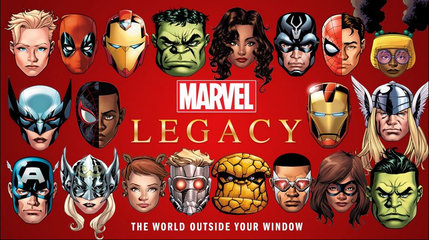

Marvel Legacy
Mapa interactivo de los personajes más importantes del Universo Marvel
Pincha sobre los personajes que aparecen en el siguiente listado, y verás información detallada sobre cada uno de ellos:

Tabla de Personajes
- Deadpool
- Ironman
- Hulk
- Spiderman Negro (Miles Morales)
- Capitán América
- Jane Foster (Thor Mujer)
- Star-Lord (Guardianes de las Galaxias)
Si quieres saber más sobre tus personajes, pincha en el siguiente
link
.